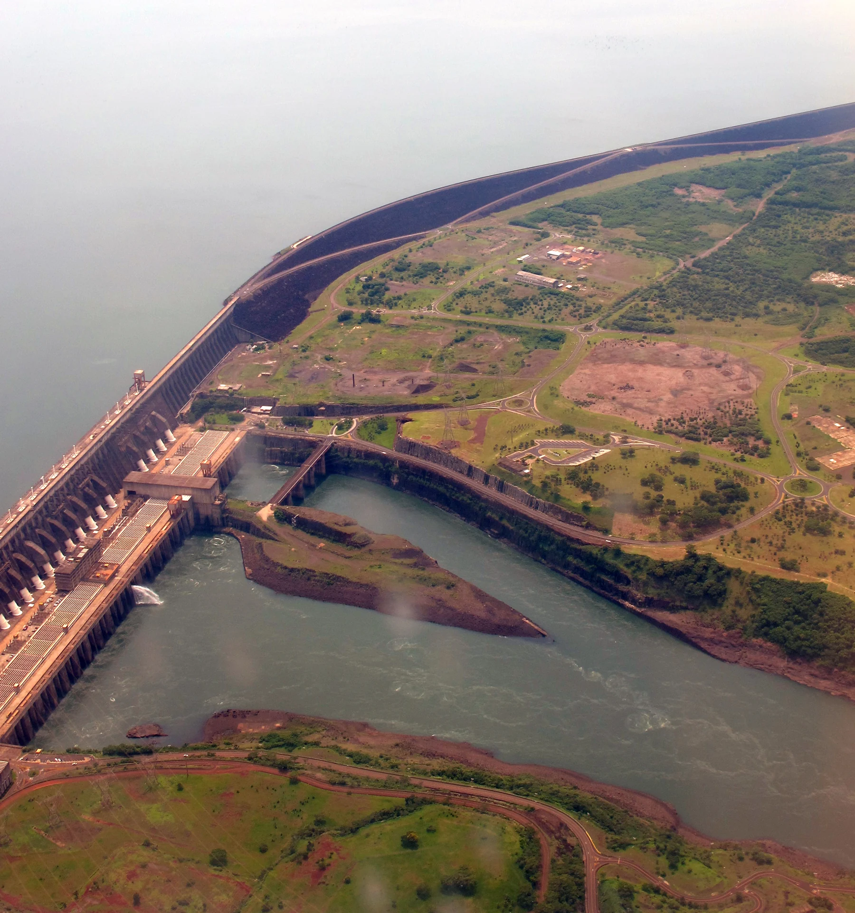
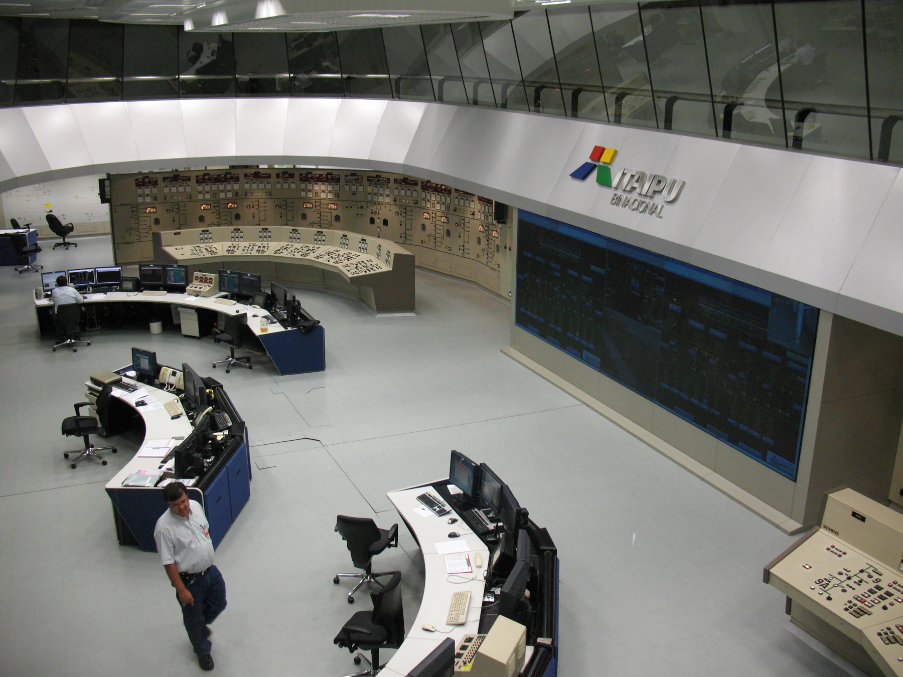
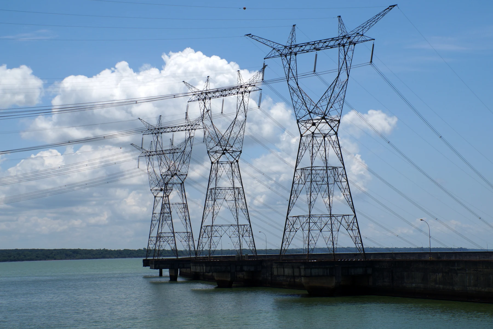

NIVAR / CADERNO DE EVIDÊNCIA VIVOO território tem história.
A imagem tem fonte.
Estas fotografias históricas mostram a infraestrutura binacional de Itaipu. O movimento de câmera, o reenquadramento e o tratamento de cor são editoriais. Não são filmagens de uma operação atual.
Os valores do ensaio de método são uma série sintética NIVAR, independente das fotografias. Nenhuma medição é atribuída à usina, às torres ou aos operadores retratados.

Itaipu Dam, aerial photograph.jpg
acediscovery · 2013-01-02
Página original e histórico · CC BY 4.0
Adaptações NIVAR: redimensionamento, codificação WebP, reenquadramento e tratamento cromático na interface. 
Itaipu-Wasserkraftwerk Kontrollraum.JPG
Anagoria · 2010-11-20
Página original e histórico · CC BY 3.0
Adaptações NIVAR: redimensionamento, codificação WebP, reenquadramento e tratamento cromático na interface. CC BY 3.0 escolhida entre as duas licenças disponíveis; GFDL não utilizada.
Power lines and Itaipu lake (8155778229) (2).jpg
Leandro Neumann Ciuffo · 2012-11-04
Página original e histórico · CC BY 2.0
Adaptações NIVAR: redimensionamento, codificação WebP, reenquadramento e tratamento cromático na interface. Torres do lado paraguaio. Infraestrutura binacional; a fotografia não representa transmissão do lado brasileiro.As torres foram fotografadas do lado paraguaio. A sala de controle é um registro de 2010. As fontes visuais não implicam parceria, acesso operacional ou endosso.
Voltar ao Portal Brasil